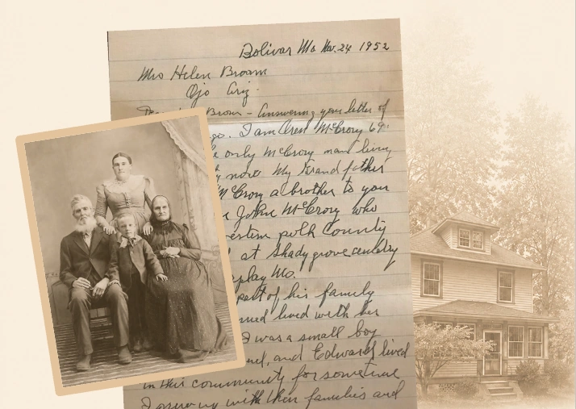

Personalized Approach
Your story is unique.
So is our approach.
Genealogical & Historical Research
Let’s uncover yours
Thoughtful research can turn scattered records into meaningful stories—helping you discover where you come from, honor those who came before you, and preserve your legacy for generations to come.
Schedule a Consultation
Your story is unique.
So is our approach.
We treat every story
with care and respect.
Decades of research
and professional training.
Behind every name is a person with dreams, challenges, and a life worth remembering. I believe genealogy is about connection—between generations, between communities, and between the past and the future.
I’d be honored to help you find your story.
Personal & Respectful
Your story is personal. I treat every project with care,
confidentiality, and deep respect.
Thorough & Transparent
Every conclusion is supported by meticulous research and clear
documentation you can trust.
Experienced & Trusted
Graduate training, professional membership, and years of hands-on
research you can count on.
Guided & Supportive
I’ll guide you through the research process, keep you informed, and
celebrate discoveries together.
Chrystal uncovered stories about our family we never knew existed. Her research was meticulous, her explanations were clear, and her reports are something our family will treasure for generations.